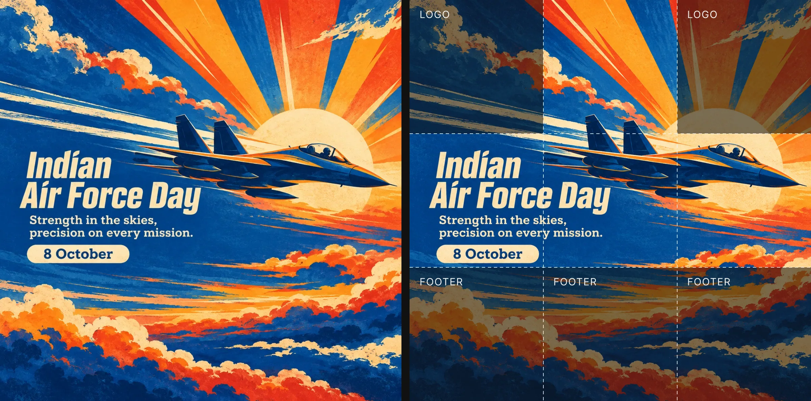
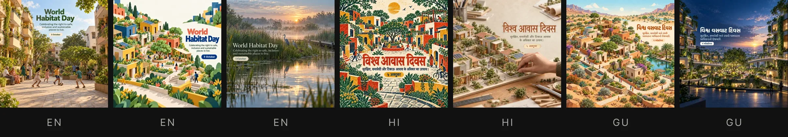
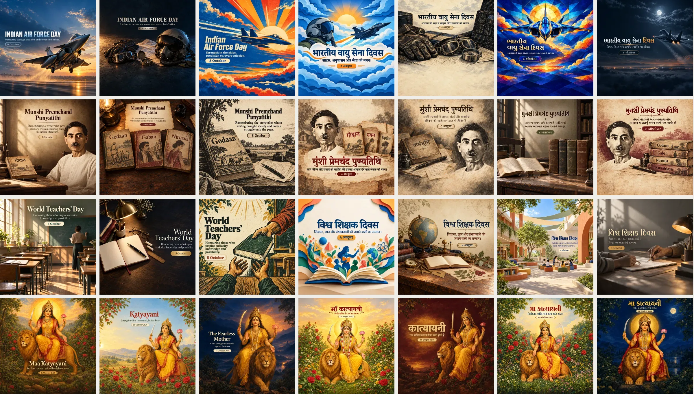

Vistofy — a festival calendar in three languages
Vistofy's customers post a greeting for every festival and observance, with their own logo and contact strip laid over it. I set the visual rules for an AI image line that could keep up with that calendar, then ran it: 23 sets, 161 images, in ten days.

The problem
Small businesses in India post for every occasion: all nine days of Navratri, Dussehra, birth and death anniversaries, international days. Vistofy's library has to hold a finished set for each date at least ten days ahead, in the languages its customers read.
At the end of August there was no art for any of the 46 dates left in the year. Drawing by hand could not cover a calendar where one festival alone runs nine days in a row.
The rule that comes first: leave room
An image model doesn't know that a template is only half finished. The customer's logo goes in the top corners and their name, phone number and address run along the bottom. So the first rule is about space, not style.

The canvas is a 3×3 grid. Subject and copy live only in the middle row and the top-middle cell. The other five cells continue the background and carry nothing.
Two lines of copy
A heading and a subtext, nothing else. The heading carries the occasion's character through one expressive move; the subtext stays quiet at about a third of its size. Five layouts decide where the pair sits: centred at the top, left, right, as a banner across the middle row, or stacked to one side.
The writing follows its own rule: one true observation, then stop. Never explain a festival to the people who celebrate it, never pull a business lesson out of a religious occasion, no exclamation marks.
Seven per set, nothing repeated
Each occasion gets seven templates: three in English, two in Hindi, two in Gujarati. One prompt card writes all seven at once against a variety matrix in which no column may repeat: treatment, colour world, viewpoint, light, subject, background material, letterform, layout and mood. At least four of the seven are not photographic. At least two are vivid and two are dark.

World Habitat Day, all seven. Three scripts, with a different treatment, viewpoint and light in each.
Running the line
Sets are generated from the prompt cards; since 8 October I generate them myself in a Figma Weave workflow. I pick, and re-edit in Photoshop where a composition needs it. An audit step then checks crop, size (2000 px square, WebP under 1.2 MB) and whether anything has strayed into the logo or footer zones.
Every heading is read letter by letter in all three scripts. Single-mark errors (a doubled vowel sign in Hindi, a missing anusvara in Gujarati, a Devanagari letter slipped into a Gujarati line) are repaired in Photoshop rather than regenerated, because regenerating throws away a picture that was otherwise right.

Four of the 23 sets: Indian Air Force Day, Munshi Premchand's death anniversary, World Teachers' Day, and Maa Katyayani on the sixth day of Navratri.
What the checks can't see
The automated checks catch size, crop, zones and spelling. They don't catch anatomy. On Dussehra, the bow in three of the seven templates had unequal limbs; I caught it by eye, and those three are queued to be regenerated.
Likeness is the same problem. No check can tell whether an AI portrait of Premchand actually looks like Premchand, so tribute prompts carry a real photograph as reference and the result still needs a person to look at it. And the space rule isn't won yet: in several sets the subject still spills into the footer row. The audit flags it every time, and the prompts are being tightened.
Result
Between 1 and 10 October, 23 complete sets were filed upload-ready, 161 images in all, including every day of Navratri. The rules, the matrix and the prompt cards are written down, so the line doesn't depend on one person remembering how it works.
The images are AI-generated: from 8 October with GPT Image in my Figma Weave workflow, earlier sets with another image model from my prompts. The rules, the prompt system, the picks and the final review are mine. The audit and repair tooling was built with an AI assistant to my specification. These are templates for Vistofy's customers, not Vistofy's own brand, which is why they don't carry the brand violet.